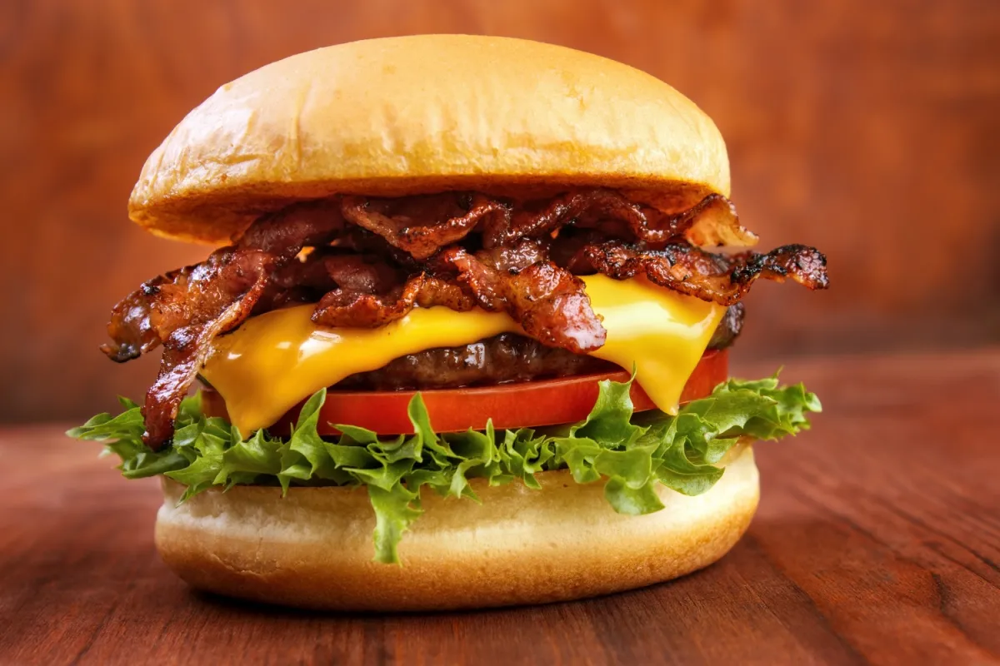

Hamburguesa
Las hamburguesas son un popular plato de comida rápida que ha conquistado el mundo. Consisten en una deliciosa carne picada que se cocina a la parrilla o a la plancha y se coloca entre dos mitades de un panecillo, conocido como pan de hamburguesa. Esta sencilla pero satisfactoria combinación se adorna con una variedad de ingredientes permitiendo a cada persona personalizar su hamburguesa según sus gustos. Las hamburguesas son apreciadas por su versatilidad y su sabor delicioso, convirtiéndolas en un clásico de la comida rápida y una elección popular en restaurantes de todo el mundo.

Ingredientes
- Pan
- Carne
- Queso
- Lechuga
- Tomate
- Beicon
- Cebolla
- Pepinillos
- Salsas al gusto
Preparacion
- Primero tostamos las rebanadas de pan de hamburguesa.
- Despues de esto cocinamos la carne de de la hamburguesa.
- Tambien tendremos que cocinar el beicon.
- Empezamos a montar la hamburguesa:
- Primero ponemos la lechuga encima de la rebanada de pan.
- Despues agregamos el tomate, la cebolla y los pepinillos.
- Continuamos por añadir la carne de la hamburguesa con el queso encima para que se funda.
- Por ultimo añadimos el bacon cocinado y ponemos la otra rebanada de pan encima de todo.
Informacion nutricional
- Calorías:
- Alrededor de unos 550-650 calorias dependiendo de la calidad de los productos usados
- Carbohidratos:
- Unos 40 gramos de carbohidratos
- Proteínas:
- Varia entre unos 35 hasta los 45 gramos
- Grasas:
- Alrededor de unos 40 gramos de grasas
- Fibras:
- Ronda entre unos 5.5-6.5 gramos
- Azucares:
- Alrededor de 3-4 gramos dependiendo de las salsas usadas